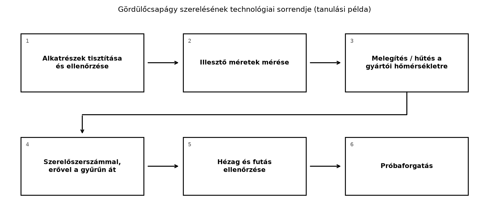

A műhelyben rendszeresen találkozol olyan javítási helyzettel, amikor egy kopott csapágyat, berágódott perselyt vagy sérült tömítést kell cserélni. Ilyenkor nem elég az új alkatrészt megvenni: a csapágyat szakszerűen le kell húzni, a felületeket meg kell tisztítani, az illesztő méreteket ellenőrizni kell, majd az új gépelemet a gyártói eljárás szerint be kell szerelni. Ha a szerelő rosszul viszi fel az erőt, melegítés nélkül próbál felsajtolni, vagy nem ellenőrzi a méretláncot, akkor a csapágy néhány száz kilométer után tönkremegy, és az ügyfél visszahozza az autót. Ez az alfejezet a tanműhelyi gépi megmunkálás és a gépelemszerelés alapjait tanítja meg, mert a járműjavításban a csapágy-, fogaskerék- és tömítésszerelés éppen olyan fontos, mint a hibadiagnosztika.
Képzeld el a tanműhely gépműhelyét: bal oldalon egy hagyományos eszterga áll, a főorsóban egy acél tengelycsonkkal; a szánon karbidlapkás szerszám, a gép mellett hűtő-kenő emulzió. Mellette egy kettős köszörűgép, amelynek egyik oldalán durva, másik oldalán finom szemcséjű korong forog, előtte a szerszámtámasz és a védőburkolat. A sarokban hidraulikus prés, csapágy-lehúzó készlet, indukciós melegítő és tűpontos hőmérő. A munkapadon egy használt kerékcsapágy, fogaskerék, tömítések és mérőeszközök. A feladat: a kopott csapágyat szakszerűen kiszerelni, a felületeket tisztítani, az új csapágyat ellenőrzött hőmérséklettel felszerelni, majd a hézagot és a futást ellenőrizni.
Definíció. Az esztergálás (turning) olyan forgácsoló megmunkálás, amelynél a munkadarab forog, és a szerszám előtolással halad a felület mentén. Járműjavítási célra elsősorban perselyeket, távtartókat, tengelyvégeket, féktárcsa-központosító felületeket munkálunk meg.
Definíció. A köszörülés (grinding) nagyon kemény szemcsékből álló köszörűkoronggal végzett finom forgácsolás, amely nagy méretpontosságot és sima felületet ad. A szerszámélezés a vágószerszám élgeometriájának köszörűvel való helyreállítása.
Definíció. A hántolás hántolókéssel végzett kézi finommegmunkálás, amelynél nagyon vékony forgácsot választunk le, hogy a felület síkja vagy hordképe (például siklócsapágy, vezeték, illesztőfelület) javuljon; a hordképet festékes síklappal (tusírozás) ellenőrizzük. A járműjavításban ritka, elsősorban felújításnál fordul elő.
Definíció. A csiszolás (polishing/fine sanding) kötött vagy szabad szemcsékkel végzett felületfinomítás, amely a köszörülésnél kisebb anyagleválasztással dolgozik. Példa: tömítésfelület kézi csiszolása finom szemcséjű papírral, ellenőrzött alátéten.
Definíció. A méretlánc (dimension chain) olyan, egymáshoz illeszkedő méretek sorozata, amely egy záró méretet határoz meg. A záró méret tűrése a láncszemek tűrésének összegéből adódik.
Definíció. A cserélhetőség (interchangeability) azt jelenti, hogy az azonos típusú alkatrészek egymással olyan pontosan gyárthatók, hogy bármelyik beszerelhető a másik helyére utólagos illesztés nélkül. A teljes cserélhetőség mellett a részleges cserélhetőség, a válogatás, az utólagos illesztés és a beszabályozás a gyakorlatban különböző költség–minőség kompromisszumot jelentenek.
Az esztergán a főorsó fordulatszámát a vágósebesség és a munkadarab átmérője határozza meg. A vágósebesség az a kerületi sebesség, amellyel a munkadarab felülete a szerszám előtt elhalad. Az összefüggés:
ahol a fordulatszám (1/min), a vágósebesség (m/min), a munkadarab átmérője (m). A szerszám anyaga korlátozza a megengedett vágósebességet: például gyorsacél szerszámmal lágyacélt jellemzően 25–35 m/min, karbidlapkával 100–180 m/min tartományban esztergálnak (ellenőrizendő: szerszámkatalógus szerint). A beállításnál az előtolás (mm/fordulat) és a fogásmélység (mm) határozza meg a forgács vastagságát.
A köszörűgépen a korong kerületi sebessége általában 30–35 m/s, ezért a korong fordulatszámát tilos önkényesen növelni. A korongot felszerelés előtt repedésvizsgálattal ellenőrizzük: felfüggesztve könnyű, nem fémes kalapáccsal óvatosan megütve csengő hangot kell adnia; repedt korong tompa hangot ad.
A gépelemek szerelésekor az illesztések megválasztása határozza meg, hogy a gyűrű, fogaskerék vagy tömítés hogyan ül a házban vagy a tengelyen. A hézagot vagy fedést a méretlánc szélsőérték-módszerével számoljuk. Ha a záró méret például a csapágyhézag, akkor:
ahol a távtartó hossza, és a csapágyak vállméretei. A záró méret tűrése az egyes tűrések abszolút értékének összege. A gyakorlatban a beszabályozás azt jelenti, hogy a távtartót vagy beállító gyűrűt a mért hézag alapján választjuk meg, köszörüljük vagy csiszoljuk.
A járműalkatrészek szennyeződései eltérő tulajdonságúak: olajos, kokszos, oxidált, vízköves, régi tömítésmaradványos vagy fémes kopadékos. A tisztítási eljárás kiválasztása a szennyezés típusától és az alkatrész anyagától függ. - Az olajos, zsíros felületet lúgos vagy semleges vizes alapú tisztítószerrel, illetve oldószerrel tisztítjuk. - A tömítésmaradványt mechanikusan, plasztik spatulával vagy felületkímélő kémiai oldóval távolítjuk el, tilos éles acélkéssel karcolni a tömítésfelületet. - Az oxidált, rozsdás felületet finom csiszolással, drótkefével vagy vegyszeres rozsdaoldóval készítjük elő. - A kokszos égéstéri lerakódást áztatásos vagy ultrahangos tisztítással oldjuk, nem fújjuk szét sűrített levegővel.
Környezetvédelem. A tisztítási oldószerek, a hűtő-kenő emulzió, a fáradt olaj és az olajjal, emulzióval szennyezett fémforgács veszélyes hulladék, ezért ezeket nem szabad a csatornába vagy a kommunális hulladékba önteni. A tanműhelyben zárható gyűjtőedényeket, szelektív tárolást és a veszélyes hulladékra vonatkozó nyilvántartást kell alkalmazni (2012. évi CLXXXV. törvény a hulladékról – ellenőrizendő: hatályos szöveg; 225/2015. (VIII. 7.) Korm. rendelet – ellenőrizendő). A szennyezett rongyot, olajos forgácsot külön edénybe gyűjtjük.
A gördülőcsapágy (rolling bearing) belső gyűrűből, külső gyűrűből, gördülőelemekből és ketrecből áll. A szereléskor az erőt mindig csak azon a gyűrűn szabad átvinni, amelynek illesztése éppen feszül, mert a gördülőelemeken átvitt erő kipontozódást, kifáradást okoz. Ha a csapágyat tengelyre szereljük, a belső gyűrűt támasztjuk alá és arra hat az erő; ha házba szereljük, a külső gyűrűre. A gyűrűket fokozatosan, merőlegesen kell felnyomni, ütközésig, majd ellenőrizzük a szabad forgást.
A csapágy szerelhető hidegen vagy hőmérséklet-különbséggel. A gyakorlatban a csapágyat indukciós melegítővel vagy kemencében melegítjük, nyitott csapágynál jellemzően legfeljebb kb. 110–120 °C-ra, zárt (tömített, zsírzott) csapágynál legfeljebb kb. 80 °C-ra (ellenőrizendő: csapágytípus és a csapágygyártó adata). Ennél magasabb hőmérsékleten a csapágy károsodhat, mert a gyűrűk anyaga meglágyul, a kenőanyag elszenesedik, a tömítés megsérül. Alternatívaként a tengelyt folyékony nitrogénnel vagy szárazjéggel hűtik, de ezt csak megfelelő védőeszközzel és gyártói engedéllyel szabad végezni.
Az ábra három szerelési esetet mutat: tengelyre szerelésnél a hüvely a belső gyűrűre, házba szerelésnél a külső gyűrűre nyom, egyszerre tengelyre és házba szerelésnél a szerelőtárcsa mindkét gyűrűre. A hibás változatokban (ütés a külső gyűrűre, nyomás a belső gyűrűn házba szereléskor) a szaggatott erőfolyam a golyókon halad át, ez okozza a futópálya benyomódását.
A fogaskerekeket úgy szereljük, hogy a foghézag a gyártói érték között legyen, és az érintkezési kép a foghossz közepén, a fogmagasság megfelelő sávjában helyezkedjen el. A túl nagy foghézag kopogást, a túl kicsi foghézag megszorulást, zajt és melegedést okoz. A csőkötéseknél a csatlakozó felületeket tisztítjuk, a tömítő O-gyűrűt vagy tömítőanyagot a gyártó szerint alkalmazzuk, a csavarkötéseket átlósan, fokozatosan, a megadott nyomatékkal húzzuk meg. A papír- vagy fémtömítéseket előzetesen nem szabad festeni, ragasztani, hacsak a gyártói utasítás nem írja elő.
A festékes hordképvizsgálatnál a folt helye mutatja a beállítás hibáját: a fogfejen lévő folt túl nagy, a fogtőnél lévő túl kicsi tengelytávolságra utal, a fog egyik végén lévő folt a tengelyek szögeltérésére. Az okok tájékoztatók, a beállítást a gyártói javítási utasítás adja (ellenőrizendő).
A gépelemek hibái három fő csoportba sorolhatók: kopás, kifáradás, berágódás. A kopás anyagfogyással jár, mérhető méretcsökkenésként vagy hézagnövekedésként. A kifáradás apró pitting, kagylós kipattogzás vagy repedés formájában jelentkezik. A berágódás hirtelen, helyi összehegedésből származó felületi sérülés, amely a kenés hiányára, túlmelegedésre vagy túlzott előfeszítésre utal.
Adott: munkadarab átmérője
,
vágósebesség
.
Keresett: főorsó-fordulatszám
.
Képlet:
.
Behelyettesítés:
.
Eredmény: A gép fordulatszámát kb.
-ra
állítjuk.
Ellenőrzés: Lágyacél karbidlapkás esztergálásakor a
900–1000 1/min reális; a mértékegységek kiejtik egymást.
Adott:
,
,
.
Keresett: a
záró hézag legnagyobb és legkisebb értéke.
Képlet:
.
Behelyettesítés:
;
;
.
Eredmény: A hézag
és
mm között változhat. Ha a gyártói hézagkövetelmény például
–
mm, akkor ez a méretlánc nem megfelelő; a távtartót válogatni vagy
csiszolni kell.
Ellenőrzés: A tűrésmezők szélessége
mm; ez éppen a záró méret tűrésmezője
(
mm), összhangban a szélsőérték-módszerrel.
Előírás. A gépi berendezések biztonsági követelményeit az Európai Unió gépekről szóló irányelve (2006/42/EK – ellenőrizendő: hatályos szöveg), valamint a magyar munkavédelmi törvény (1993. évi XCIII. törvény – ellenőrizendő: hatályos szöveg) és a kapcsolódó nemzeti rendeletek (ellenőrizendő) határozzák meg. Esztergán, fúrógépen és köszörűgépen csak oktatói felügyelet mellett, a gép védőburkolataival, védőszemüveggel és megfelelő ruházattal szabad dolgozni.
Figyelem. A köszörűkorong felrobbanhat, ha repedt, ha túl nagy fordulatszámon járatják, vagy ha a szerszámtámasz és a védőburkolat hiányzik. A korongot felszerelés előtt repedésvizsgálattal kell ellenőrizni. A szerszámtámasz és a korong közötti rés legfeljebb 2–3 mm legyen (ellenőrizendő: a gép kezelési utasítása), és a korong kopásával utánállítjuk. Felszerelés után a korongot a gép üzemi fordulatszámán, legalább 1 percig, a korong síkján kívül állva járatjuk próbajáratáskor. A gép fordulatszáma nem lehet nagyobb a korongon jelölt megengedett értéknél.
Tilos. Forgó munkadarabot, szerszámot vagy korongot kézzel érinteni, hosszú hajjal, bő ujjú ruhával, kesztyűvel a géphez állni, a forgácsot kézzel eltávolítani, vagy a gépet a védőburkolat eltávolítása után járatni.
Biztonsági korlát. A feladat tanműhelyi környezetre, oktató felügyeletére és a gyártói javítási utasítás betartására vonatkozik; a megadott értékek tanulási példák.
A gépi megmunkálás és a gépelemszerelés minőségét mindig méréssel igazoljuk: - Az esztergált átmérőt mikrométerrel vagy tolómérővel mérjük, az ovalitást több ponton. - A köszörült vagy csiszolt tömítésfelületet síklappal és hézagmérővel ellenőrizzük: a megengedett hézag jellemzően 0,05 mm alatti (ellenőrizendő: gyártói adat). - A csapágyhézagot hézagmérővel vagy mérőórával, a futási ütést mérőórával ellenőrizzük. - A fogaskerék foghézagát hézagmérővel vagy ólomdrótos lenyomattal mérjük. - A csavarkötéseket a gyártói nyomatékértékre állított nyomatékkulccsal húzzuk meg, majd a meghúzást kétszer ellenőrizzük.
Egy tanulóműhelybe érkező személyautón a bal első kerékcsapágy zúg, kanyarodáskor erősödik. A tanuló a gyártói javítási utasítás alapján dolgozik. Először a járművet a gyártói emelési ponton megemeli, és bakra támasztja; alá csak alátámasztott helyzetben nyúl. A kereket leveszi, a féknyereget és a féktárcsát a gyártó szerint ki-, illetve rögzíti. A régi csapágyat prés és célszerszám segítségével, a megfelelő gyűrűn át nyomja ki. A ház és a tengely illesztő felületeit tisztítja, a méreteket méri: a furat 62 mm, a tengelycsap 30 mm; az új csapágy méreteit a dobozon és mérőeszközzel is ellenőrzi. Az új, zárt (zsírzott) csapágyat nem melegíti: a csonkállványból kiszerelt házfuratba hidegen, a külső gyűrűre ható nyomótüskével és préssel, ütközésig sajtolja; a biztosítógyűrűt beteszi, majd az agyat a belső gyűrűre támaszkodva préseli be (ellenőrizendő: a gyártói javítási utasítás). Melegítéses szerelést csak nyitott, nem zsírzott ipari csapágynál alkalmaznak, ott is a csapágygyártó hőmérsékleti határa szerint. Összeszerelés után a forgást és az axiális hézagot ellenőrzi, majd az új tömítést és az agyanyát a gyártó által megadott nyomatékkal (például 180 Nm + 90°, ellenőrizendő) meghúzza. A javítás után próbaúton a zúgás megszűnik. A tanulság: a hőmérséklet-ellenőrzés nélküli melegítés és a rossz gyűrűről átvitt erő a leggyakoribb hibaforrás.

A folyamatábra a csapágycsere hat alapvető lépését mutatja: a tisztítás és ellenőrzés nélkül nem tudjuk, miért kopott el a régi csapágy; a mérés nélkül nem tudjuk az illesztést; a hőmérséklet-különbség nélkül túlzott erőt kellene kifejteni; a rossz gyűrűn átvitt erő tönkreteszi a csapágyat; a hézag- és futásellenőrzés igazolja a szerelést; a próbaforgatás a végső minőségellenőrzés.
Gördülőcsapágy cseréje tanműhelyi gépen vagy jármű kerékcsapágyon (tanulási példa)
Biztonsági korlát. A feladat tanműhelyi környezetre, oktató felügyeletére és a gyártói javítási utasítás betartására vonatkozik; a megadott értékek tanulási példák. Emelésnél a kocsiemelővel tartott jármű alá bemenni tilos, bakot vagy aknát kell használni.
Munkalépések:
A 3. lépéshez: a kétkarú lehúzó orsócsúcsa a tengely központfuratában támaszkodik, a körmök a lehúzandó belső gyűrű mögé fognak; ha a körmök a külső gyűrűn vannak, az erő a gördülőelemeken át megy, a csapágy szétesik vagy a karok lecsúsznak. A házban maradt csapágyat belső lehúzóval (feszítőpatron és ütőkalapácsos szár) húzzuk ki; védőszemüveg kötelező.
Tipus hibák a munkalapnál: - A csapágy felfekszik a gördülőelemekkel, nem a gyűrűvel. - A melegítés hőmérséklete túllépi a gyártói határt, a csapágy anyaga vagy kenése károsodik. - Az illesztő méretet nem ellenőrzik, a túlzott fedés miatt a csapágy beszorul.
1. feladat (A)
Számítsd ki az esztergálási fordulatszámot, ha a munkadarab átmérője
és a vágósebesség
.
A képletben
-t
méterben helyettesítsd.
2. feladat (A)
Sorold fel a gördülőcsapágy szerelésénél az erőátvitel három
legfontosabb szabályát.
3. feladat (B)
Egy méretláncban
,
,
.
Számítsd ki a
záró hézag névleges, legnagyobb és legkisebb értékét. A gyártói
hézagkövetelmény
–
mm; megfelel-e a méretlánc?
4. feladat (B)
Három tisztítási feladat: a) olajos hajtóműház belső felülete; b)
leszakadt papírtömítés maradványa az olajteknő peremén; c) erősen
oxidált, rozsdás féltengelycsap. Melyik tisztítási eljárást választod,
és miért?
5. feladat (C)
Hasonlítsd össze a csapágy melegítését és a tengely hűtését. Melyik
módszer milyen előnnyel és kockázattal jár a járműjavításban?
6. feladat (D)
Egy beszerelt kerékcsapágy próbaúton néhány kilométer után melegszik,
halkan zúg, és a kerék forgatása kézzel nehéz. Sorold fel a lehetséges
okokat, és add meg mindegyikhez a célzott ellenőrzést.
Önellenőrzés – válaszok
Feladatok megoldása
1. feladat
,
.
.
A gépet kb.
fordulatra állítjuk.
2. feladat
Az erőt mindig azon a gyűrűn kell átvinni, amelynek illesztése feszül; a
gördülőelemeken keresztül erőt átvinni tilos; a csapágyat merőlegesen,
fokozatosan, ütközésig kell szerelni.
3. feladat
.
.
.
A hézag
és
mm között alakulhat. A megengedett
–
mm-es hézag nem teljesül, ezért a méretlánc nem megfelelő;
távtartó-válogatás vagy beszabályozás szükséges.
4. feladat
a) Olajos hajtóműház: lúgos vagy semleges vizes tisztítószer, majd
tiszta vízzel öblítés és gondos szárítás.
b) Papírtömítés-maradvány: plasztik spatula, felületkímélő oldószer,
esetleg finom csiszolás sík alátéten. Acélkéssel tilos kaparni.
c) Rozsdás féltengelycsap: drótkefe, finom csiszolóvászon, oxidoldó,
majd a felület méretének és érdességének ellenőrzése.
5. feladat
A csapágy melegítése gyors, egyszerű és nem igényel fagyasztó anyagot; a
gyűrű megtágul, csökken a sajtolási erő. Kockázata, hogy a csapágy
túlmelegítése tönkreteszi az anyagot és a kenőzsírt. A tengely hűtése
kisebb hőterhelést ad a csapágyra, és nagyon tiszta szerelést tesz
lehetővé; kockázata a folyékony nitrogén vagy szárazjég okozta fagyásos
sérülés és a páralecsapódás, ami azonnali korróziót okozhat. A
járműjavításban általában az indukciós melegítés a praktikus, mert
szabályozható, és nem hűti le a tengelyt.
6. feladat
Lehetséges okok:
- Túl nagy előfeszítés: ellenőrizzük a tengelyirányú hézagot és a
meghúzási nyomatékot.
- Rossz kenés: ellenőrizzük a csapágy kenését és a tömítést.
- Ferde beszerelés: ellenőrizzük a futási ütést mérőórával.
- Sérült illesztőfelület (berágódott vezeték): ellenőrizzük a felület
épségét és méretét.
- Rossz tömítés, amely feltorlódott: vizsgáljuk a tömítés
érintkezését.
Mindegyiknél a mért értéket a gyártói javítási adattal kell
összehasonlítani.
A gépi megmunkálás és gépelemszerelés alapja a méretpontosság, a tiszta felület és az erőátvitel szabályainak betartása. Esztergáláskor a fordulatszámot a vágósebesség és a munkadarab átmérője határozza meg: . Köszörűgépen csak ép, repedésvizsgált korongot használunk, védőburkolattal, szemvédővel. A méretlánc záró méretét szélsőérték-módszerrel számoljuk, például . A csapágy szerelésekor az erőt mindig azon a gyűrűn keresztül vezetjük, amelynek illesztése feszül; a csapágyat hőmérséklet-különbséggel, merőlegesen, ütközésig szereljük, majd a hézagot és a futást mérjük. A fogaskerekeknél a foghézagot és az érintkezési képet ellenőrizzük. A tömítésfelületet nem szabad karcolni. A veszélyes hulladékot szelektíven, a jogszabályok szerint kell gyűjteni. Továbbvitt eredmény. A csapágy-, fogaskerék- és tömítésszerelés szabályait, valamint a kopás–kifáradás–berágódás hibafelvételezési módszert használjuk a(z) A motor ki- és beszerelése, szétszerelése és a forgattyús hajtómű hibafelvételezése alfejezetben, ahol a motorbelső csapágyait, tömítéseit és illesztett kötéseit szereljük.
Forrástípusok: a munkavédelmi törvény (1993. évi XCIII. törvény – ellenőrizendő: hatályos szöveg), az EU gépekről szóló irányelve (2006/42/EK – ellenőrizendő), a hulladékról szóló törvény (2012. évi CLXXXV. törvény – ellenőrizendő) és a veszélyes hulladék rendelet (225/2015. (VIII. 7.) Korm. rendelet – ellenőrizendő) a környezetvédelemhez. A gyártói javítási adatok (csapágy szerelési hőmérséklet, nyomaték, hézag) tanulási példaként szerepelnek, és mindig a konkrét jármű vagy gép gyártói utasítása szerint ellenőrizendők. A szerszámanyag-vágósebesség tartományok, a csapágyhőmérséklet-határok és a tömítésfelület síkhiba-értékei szintén ellenőrizendők a szerszámkatalógus, a csapágygyártó és a tömítésgyártó adatai alapján. A szöveg nem hivatkozik az URL-ekre olvasott bizonyítékként; azok csak kiindulópontok.